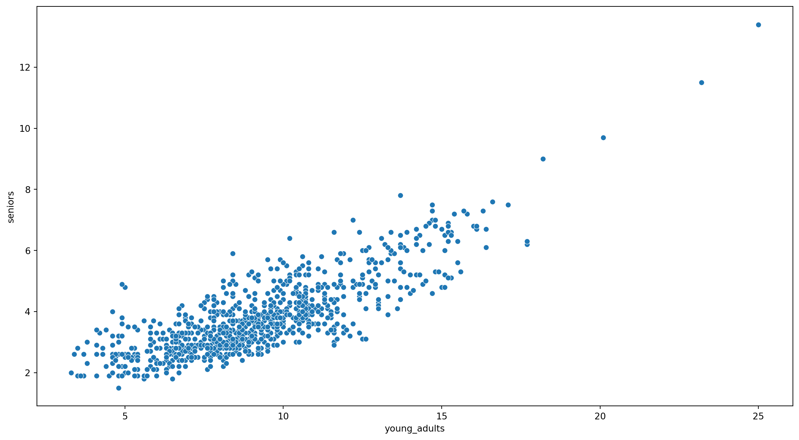

Introduction to Pandas and Seaborn
Recap from yesterday
Python libraries / packages
Introduction to Numpy (+ numpy-financial)
Getting started with visualizations with matplotlib
Overview for today
Today, we will cover the typical steps when doing data analysis projects. For this session, we will do simple time series analysis.
- Step 1: Loading and pre-processing data (with pandas)
- Step 2: Time Series analysis
- Step 3: Data Visualization (with Seaborn)
Step 1: Loading and pre-processing data (with pandas)
What’s Pandas?

pandasis a fast, powerful, flexible and easy to use open source data analysis and manipulation tool, built on top of the Python programming language.pandasaims to be the fundamental high-level building block for doing practical, real world data analysis in Python. 1
- Well-established Python library for data manipulation and analysis
- Built on top of NumPy. Unlike Numpy who can be difficult to “read”, Dataframe presents data in tabular format that’s easier for humans to read and perceive.
- Provides DataFrame and Series data structures
- Many cheatsheets available: https://pandas.pydata.org/Pandas_Cheat_Sheet.pdf or https://python-graph-gallery.com/cheat-sheets/
Comparison to Numpy
| Feature | NumPy Array | pandas DataFrame |
|---|---|---|
| Data Types | All elements must be of the same type (e.g., integers, floats). | Different columns can hold different data types (e.g., integers, floats, strings). |
| Performance | Faster for numerical computations due to homogeneity and optimized implementation. | Slightly slower but more flexible for working with heterogeneous or labeled data. |
| Dimensionality | Can be multi-dimensional (1D, 2D, 3D, etc.). | Always two-dimensional with labeled rows and columns. |
| Indexing | Purely positional indexing (e.g., array[0, 1]). |
Labeled-based indexing (loc), position-based indexing (iloc), access by both labels and positions. |
| Usage | Primarily for high-performance numerical and scientific computations. | Primarily for data manipulation, analysis, and cleaning, especially for tabular and real-world datasets. |
Installing and importing packages
To install this package, you can use this command:
pip install pandas
pip install seaborn
Remember, we must first import these packages to our notebook / script before we can use them.
Pandas Cheatsheet
Have this cheatsheet open on another tab as you work through your data: https://pandas.pydata.org/Pandas_Cheat_Sheet.pdf or https://python-graph-gallery.com/cheat-sheets/
Load data from CSV to DataFrame
Before we begin…
Right-click here to open unemployment-age.csv, and then Ctrl + S / Cmd + S to save it locally into your data folder
Typically, we load the data from API source (more on this next week!) or external data file such as CSV. Let’s load the unemployment-age.csv now!
date 16_19yrs 20_24yrs 25_54yrs 55yrs_onwards Unnamed: 5
0 1948-01-01 10.1 6.6 3.0 3.6 NaN
1 1948-02-01 11.5 8.0 3.6 4.0 NaN
2 1948-03-01 10.8 8.6 3.2 3.5 NaN
3 1948-04-01 8.8 6.8 3.2 3.2 NaN
4 1948-05-01 6.9 6.3 2.6 2.9 NaNInitial checks: get basic info
The first thing that you should always do is check on the dataframe to get an overview of it. The function info() will tell us the data types for each columns, the number of observations, and index info if there’s any.
<class 'pandas.core.frame.DataFrame'>
RangeIndex: 920 entries, 0 to 919
Data columns (total 6 columns):
# Column Non-Null Count Dtype
--- ------ -------------- -----
0 date 920 non-null object
1 16_19yrs 920 non-null float64
2 20_24yrs 920 non-null float64
3 25_54yrs 920 non-null float64
4 55yrs_onwards 920 non-null float64
5 Unnamed: 5 0 non-null float64
dtypes: float64(5), object(1)
memory usage: 43.3+ KBInitial checks: get summary stats
Also get the summary statistics to get a sense of the shape and spread of your data.
| 16_19yrs | 20_24yrs | 25_54yrs | 55yrs_onwards | Unnamed: 5 | |
|---|---|---|---|---|---|
| count | 920.000000 | 920.000000 | 920.000000 | 920.00000 | 0.0 |
| mean | 15.913370 | 9.259674 | 4.560109 | 3.79837 | NaN |
| std | 4.270376 | 2.790013 | 1.585635 | 1.23832 | NaN |
| min | 5.700000 | 3.300000 | 1.800000 | 1.50000 | NaN |
| 25% | 13.000000 | 7.575000 | 3.400000 | 2.90000 | NaN |
| 50% | 15.600000 | 8.900000 | 4.300000 | 3.50000 | NaN |
| 75% | 18.400000 | 10.700000 | 5.500000 | 4.40000 | NaN |
| max | 32.200000 | 25.000000 | 12.600000 | 13.40000 | NaN |
Initial checks: column names
Optional, but you may also want to check on the column names to see how it appears in our environment (useful if you happen to have non UTF-8 characters as your column names)
Dropping columns
In some cases, we don’t really need the entire columns. Let’s drop the last column (that looks like an error in the CSV formatting).
Renaming columns
Sometimes the column names are not ideal. In our case, let’s give a name to each age group!
unemp_data.columns = ['date', 'teenagers', 'young_adults', 'adults', 'seniors']
print(unemp_data.columns)Index(['date', 'teenagers', 'young_adults', 'adults', 'seniors'], dtype='object')Alternatively, if you just want to rename specific columns:
Data preparation, analysis, and visualization tasks
Data preparation, analysis, and visualization tasks will be different depends on the dataset and your goal. Specifically for our data, we will do the following:
- Check for and remove all the missing values.
- We are primarily interested in the young adult unemployment. Separate this data into a new dataframe called
ya_unemp. - Retrieve the months and years where the young adult rate is more than 10 percent and keep this on
high_ya_unemp. - Add in a new column that tracks the total unemployment rate for each month.
- Calculate the quarterly mean unemployment rate.
- Calculate the year-on-year change of unemployment rate.
- Plot the unemployment rate over the years for each age group.
- Are there any specific month where the unemployment rate tends to be higher? Plot the data.
- Are there any outliers in the unemployment rate?
Task 1 - Handling missing values
Other than info(), we can also use isnull() to check for null values
Handling missing values: drop or no drop?
We can drop those rows that contains null values with dropna()…
<class 'pandas.core.frame.DataFrame'>
RangeIndex: 920 entries, 0 to 919
Data columns (total 5 columns):
# Column Non-Null Count Dtype
--- ------ -------------- -----
0 date 920 non-null object
1 teenagers 920 non-null float64
2 young_adults 920 non-null float64
3 adults 920 non-null float64
4 seniors 920 non-null float64
dtypes: float64(4), object(1)
memory usage: 36.1+ KB
None… or we can also fill in the null values with something else, e.g. 0
Task 2 - Retrieving columns: a single column
As the column names in DataFrame are indexed, we can simply call them by their column names! (Much more intuitive compared to Numpy)
0 6.6
1 8.0
2 8.6
3 6.8
4 6.3
Name: young_adults, dtype: float64Retrieving columns: multiple columns
Similarly, if we want to retrieve multiple columns, we can pass a list of column names to the dataframe and save these sliced columns into a new dataframe.
| date | young_adults | |
|---|---|---|
| 0 | 1948-01-01 | 6.6 |
| 1 | 1948-02-01 | 8.0 |
| 2 | 1948-03-01 | 8.6 |
| 3 | 1948-04-01 | 6.8 |
| 4 | 1948-05-01 | 6.3 |
Task 3 - Filtering row(s): without query()
We can do it “raw” or us the query function from pandas. Here is how you can do it without the query() function:
| date | teenagers | young_adults | adults | seniors | |
|---|---|---|---|---|---|
| 17 | 1949-06-01 | 19.0 | 10.1 | 4.4 | 4.9 |
| 18 | 1949-07-01 | 16.0 | 11.2 | 5.3 | 5.8 |
| 19 | 1949-08-01 | 12.6 | 10.4 | 5.0 | 5.3 |
| 24 | 1950-01-01 | 17.7 | 11.6 | 6.2 | 6.6 |
| 25 | 1950-02-01 | 17.3 | 12.2 | 6.4 | 7.0 |
Filtering row(s): with query()
And here is how you can do it with the query() function:
date teenagers young_adults adults seniors
17 1949-06-01 19.0 10.1 4.4 4.9
18 1949-07-01 16.0 11.2 5.3 5.8
19 1949-08-01 12.6 10.4 5.0 5.3
24 1950-01-01 17.7 11.6 6.2 6.6
25 1950-02-01 17.3 12.2 6.4 7.0
.. ... ... ... ... ...
873 2020-10-01 13.1 10.5 6.2 5.2
875 2020-12-01 14.1 10.6 5.7 5.8
876 2021-01-01 15.6 10.8 6.2 5.6
878 2021-03-01 12.5 10.4 5.7 4.8
880 2021-05-01 9.5 10.3 4.9 4.6
[311 rows x 5 columns]Filtering row(s): with query() and save result
Take note that the previous code will simply print out the result! If you want to save the result, make sure to assign the result to a new dataframe.
| date | teenagers | young_adults | adults | seniors | |
|---|---|---|---|---|---|
| 17 | 1949-06-01 | 19.0 | 10.1 | 4.4 | 4.9 |
| 18 | 1949-07-01 | 16.0 | 11.2 | 5.3 | 5.8 |
| 19 | 1949-08-01 | 12.6 | 10.4 | 5.0 | 5.3 |
| 24 | 1950-01-01 | 17.7 | 11.6 | 6.2 | 6.6 |
| 25 | 1950-02-01 | 17.3 | 12.2 | 6.4 | 7.0 |
Task 4 - Adding new column(s)
Let’s add a new column for total unemployment (sum of all age groups)
unemp_data['total_unemployment'] = unemp_data['teenagers'] + unemp_data['young_adults'] + unemp_data['adults'] + unemp_data['seniors']
unemp_data.head()| date | teenagers | young_adults | adults | seniors | total_unemployment | |
|---|---|---|---|---|---|---|
| 0 | 1948-01-01 | 10.1 | 6.6 | 3.0 | 3.6 | 23.3 |
| 1 | 1948-02-01 | 11.5 | 8.0 | 3.6 | 4.0 | 27.1 |
| 2 | 1948-03-01 | 10.8 | 8.6 | 3.2 | 3.5 | 26.1 |
| 3 | 1948-04-01 | 8.8 | 6.8 | 3.2 | 3.2 | 22.0 |
| 4 | 1948-05-01 | 6.9 | 6.3 | 2.6 | 2.9 | 18.7 |
Learning Check #1
Retrieve data where the employment rate for adults are between 9 to 12 inclusive. Save only the date and adults column to a new dataframe called adult_unemp
Step 2: Time Series Analysis
Side quest: DateTime Object
- A
DateTimeobject in Python, provided by thedatetimemodule, represents a specific point in time, including the year, month, day, hour, minute, second, and microsecond. - It can be used to manipulate dates and times, perform arithmetic on dates, and format dates into other string representation e.g. from dd/mm/yyyy to yyyy-mm-dd.
Components of DateTime
The DateTime object consists of multiple components that represent different parts of the date and time, such as year, month, day, hour, minute, second, etc. You can access these components individually.
# Extract year, month, and day from a specific date
now = datetime.now()
# Access individual components
print("Year:", now.year)
print("Month:", now.month)
print("Day:", now.day)
print("Hour:", now.hour)
print("Minute:", now.minute)
print("Second:", now.second)Year: 2024
Month: 10
Day: 3
Hour: 17
Minute: 50
Second: 28DateTime operations
- You can perform various operations with DateTime objects, such as calculating the difference between two dates or adding/subtracting time with the help of
timedelta. - These are essential for time series data manipulation, where date-based arithmetic is often required.
Back to Main Quest: Time Series with DataFrame
Let’s index the rows under date column as a DateTime index.
DateTime is the index, now what?
Let’s check on the dataframe once more, to make sure that it is indexed as intended:
<class 'pandas.core.frame.DataFrame'>
DatetimeIndex: 920 entries, 1948-01-01 to 2024-08-01
Data columns (total 5 columns):
# Column Non-Null Count Dtype
--- ------ -------------- -----
0 teenagers 920 non-null float64
1 young_adults 920 non-null float64
2 adults 920 non-null float64
3 seniors 920 non-null float64
4 total_unemployment 920 non-null float64
dtypes: float64(5)
memory usage: 43.1 KBIf all goes well, the date column should be part of the index now.
Extra checks with Time Series
Other things that we may want to check with Time Series is the date range of our data.
Retrieve specific date range
Now that the index is a DateTime object, we can easily retrieve specific date range! Let’s say we would like retrieve unemployment rate for during COVID, which will be March 2020 to May 2023.
teenagers young_adults adults seniors total_unemployment
date
2020-03-01 13.7 8.6 3.9 3.5 29.7
2020-04-01 32.2 25.0 12.6 13.4 83.2
2020-05-01 30.7 23.2 11.2 11.5 76.6
2020-06-01 24.5 20.1 9.7 9.7 64.0
2020-07-01 19.1 18.2 9.3 9.0 55.6Task 5 - Resampling to Quarterly data and get the quarterly mean
With time series, we can calculate the quarterly average based on the monthly data with resample()
teenagers young_adults adults seniors total_unemployment
date
1948-03-31 10.800000 7.733333 3.266667 3.700000 25.500000
1948-06-30 9.700000 6.466667 2.733333 2.900000 21.800000
1948-09-30 8.933333 5.500000 2.766667 2.700000 19.900000
1948-12-31 7.066667 4.933333 2.600000 3.166667 17.766667
1949-03-31 12.033333 8.700000 4.366667 5.000000 30.100000Resampling to Yearly data
Let’s find out what is the highest unemployment rate for each year!
Saving into a CSV
Let’s save the quarterly data to a CSV!
Changing the frequency of Time Series: More granular
Let’s say we would like get a weekly time series. Since our data is a monthly one, there will be rows with empty values if we change the frequency. There are several methods that we can employ here to fill this empty values:
- backfill
- forward fill
- interpolate
teenagers young_adults adults seniors total_unemployment
date
2024-07-07 13.2 8.1 3.8 3.3 28.4
2024-07-14 13.2 8.1 3.8 3.3 28.4
2024-07-21 13.2 8.1 3.8 3.3 28.4
2024-07-28 13.2 8.1 3.8 3.3 28.4
2024-08-04 14.1 8.0 3.7 3.1 28.9Task 6 - Calculate year-on-year changes for young adults
Let’s get the year-on-year change for young adults age group.
unemp_data['ya_YoY_pctchange'] = unemp_data['young_adults'].pct_change(periods=12) # multiply by 100 to get the %
print(unemp_data.tail()) teenagers young_adults adults seniors total_unemployment \
date
2024-04-01 10.4 6.0 3.0 2.8 22.2
2024-05-01 12.1 8.0 3.1 2.5 25.7
2024-06-01 14.4 8.2 3.5 2.9 29.0
2024-07-01 13.2 8.1 3.8 3.3 28.4
2024-08-01 14.1 8.0 3.7 3.1 28.9
ya_YoY_pctchange
date
2024-04-01 0.250000
2024-05-01 0.269841
2024-06-01 0.223881
2024-07-01 0.125000
2024-08-01 0.111111 Calculate the changes for each month
To capture the direction and magnitude of changes in unemployment rate each month, use diff() function.
Visualize the changes
Pandas is built on top of NumPy and integrates well with Matplotlib, so it is super easy to plot data right away—especially now that we’ve set the index!
Learning Check #2
Change the frequency of the time series to weekly, and interpolate the numbers. Save this new series into unemp_weekly_interpolate
Code
teenagers young_adults adults seniors total_unemployment \
date
2024-07-07 13.1 6.6 3.0 2.5 25.2
2024-07-14 13.1 6.6 3.0 2.5 25.2
2024-07-21 13.1 6.6 3.0 2.5 25.2
2024-07-28 13.1 6.6 3.0 2.5 25.2
2024-08-04 13.1 6.6 3.0 2.5 25.2
ya_YoY_pctchange changes_ya
date
2024-07-07 0.015385 -0.5
2024-07-14 0.015385 -0.5
2024-07-21 0.015385 -0.5
2024-07-28 0.015385 -0.5
2024-08-04 0.015385 -0.5 Step 3: Data visualization
What’s Seaborn?

Seaborn is a Python data visualization library based on matplotlib. It provides a high-level interface for drawing attractive and informative statistical graphics. 1
- Well-established Python library for data visualization
- Cheatsheet by Datacamp here: https://python-graph-gallery.com/cheat-sheets/
Some setups we can do:
Task 7 - Plot the entire time series
Let’s plot the unemployment rate over the years for each age group!
Task 7 - Plot the entire time series

Plotting some parts of the time series
Clearly, there are some columns that we may want to skip. To do this, we can reshape the data shape into long format using melt().
Let’s say we only want to visualize teenagers and young_adults.
1youth_data = unemp_data[['teenagers', 'young_adults']]
2youth_data = youth_data.reset_index()
3youth_data_melted = youth_data.melt(id_vars='date', value_vars=['teenagers', 'young_adults'], var_name='age_group', value_name='unemployment_rate')- 1
- Retrieve the columns that we need (index will be automatically included)
- 2
- Reset the index, so that it’s back to normal column.
- 3
- Use the melt() function to “melt” the wide data into long format
Wide data vs Long data
Check out the difference!
Wide Data
teenagers young_adults
date
1948-01-01 10.1 6.6
1948-02-01 11.5 8.0
1948-03-01 10.8 8.6
1948-04-01 8.8 6.8
1948-05-01 6.9 6.3
... ... ...
2024-04-01 10.4 6.0
2024-05-01 12.1 8.0
2024-06-01 14.4 8.2
2024-07-01 13.2 8.1
2024-08-01 14.1 8.0
[920 rows x 2 columns]Long Data
date age_group unemployment_rate
0 1948-01-01 teenagers 10.1
1 1948-02-01 teenagers 11.5
2 1948-03-01 teenagers 10.8
3 1948-04-01 teenagers 8.8
4 1948-05-01 teenagers 6.9
... ... ... ...
1835 2024-04-01 young_adults 6.0
1836 2024-05-01 young_adults 8.0
1837 2024-06-01 young_adults 8.2
1838 2024-07-01 young_adults 8.1
1839 2024-08-01 young_adults 8.0
[1840 rows x 3 columns]Visualizing is much easier with long data
We can now fit the things we want in a single line like so:

Making visualization easier: Capture month info into a separate column
With DateTime object as the index, we can easily capture the month info. This would be useful to see whether certain months tend to have higher unemployment rate based on this data.
teenagers young_adults adults seniors total_unemployment \
date
1948-01-01 10.1 6.6 3.0 3.6 23.3
1948-02-01 11.5 8.0 3.6 4.0 27.1
1948-03-01 10.8 8.6 3.2 3.5 26.1
1948-04-01 8.8 6.8 3.2 3.2 22.0
1948-05-01 6.9 6.3 2.6 2.9 18.7
ya_YoY_pctchange changes_ya month
date
1948-01-01 NaN NaN 1
1948-02-01 NaN 1.4 2
1948-03-01 NaN 0.6 3
1948-04-01 NaN -1.8 4
1948-05-01 NaN -0.5 5 Aggregate statistics
Let’s calculate the average unemployment rate for each month based on this data.
teenagers young_adults adults seniors total_unemployment \
month
1 16.612987 10.276623 5.159740 4.264935 36.314286
2 16.648052 10.207792 5.135065 4.290909 36.281818
3 15.977922 9.727273 4.905195 4.138961 34.749351
4 15.248052 9.076623 4.589610 3.902597 32.816883
5 15.981818 9.262338 4.322078 3.631169 33.197403
6 19.632468 9.836364 4.367532 3.646753 37.483117
7 16.216883 9.293506 4.528571 3.781818 33.820779
8 14.025974 8.961039 4.501299 3.703896 31.192208
9 15.543421 8.925000 4.292105 3.468421 32.228947
10 15.027632 8.500000 4.178947 3.432895 31.139474
11 15.502632 8.493421 4.297368 3.618421 31.911842
12 14.502632 8.522368 4.430263 3.686842 31.142105
ya_YoY_pctchange changes_ya
month
1 0.023639 1.802632
2 0.027765 -0.068831
3 0.023718 -0.480519
4 0.056689 -0.650649
5 0.053468 0.185714
6 0.040224 0.574026
7 0.043577 -0.542857
8 0.035135 -0.332468
9 0.033654 -0.048684
10 0.035276 -0.425000
11 0.028284 -0.006579
12 0.024550 0.028947 Task 8 - Months where unemployment rate then to be high
Which month seems to have the highest unemployment rate on average?
Task 9 - Finding outliers
Let’s see how unemployment rate fared each month for young_adults. Are there any outliers?
More Seaborn: Scatterplot
Seaborn can do many other visualizations as well. For example, let’s try plotting a scatterplot of young_adults and seniors
More Seaborn: Regplot
Let’s try plotting a regression plot of young_adults and seniors
Learning Check #3
Plot the unemployment rate fared each month for young_adults with violin plot to see the distribution better.
End of Session 3!
We have covered pandas and Seaborn!